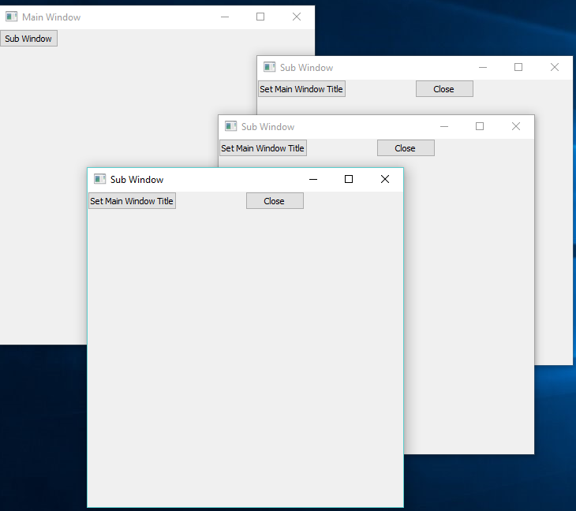
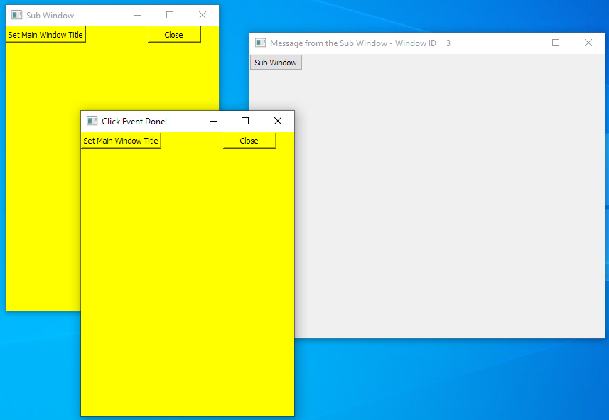

Objects Library for RingQt Application¶
In this chapter we will learn about the objects library and using it in GUI applications.
Instead of using global variables for windows objects and connecting events to objects using the object name, the Objects Library will manage a list of the GUI objects and will provide a more natural API to quickly create one or many windows from the same class.
Also the Objects Library provide a way to quickly set methods to be executed when an event is fired. Also the library provide a natural interface to quickly use the parent or the caller windows from the child or sub windows and the other way around.
The Objects Library is designed to be used with the MVC Design Pattern.
The Objects Library uses reflection and meta-programming to add new methods to Controller classes to provide an easy way for communication between these classes.
The Objects Library is called automatically by the GUILib
Also we can call it alone by using the next command
load "objectslib.ring"
The ObjectsLib provide functions like openObject(), lastObject() and a class called ObjectsParent
The GUILib provide a new specific API for GUI applications like openWindow(), lastWindow(), etc.
Library Usage with GUI Applications¶
Use the openWindow(cWindowControllerClassName) function to open new Windows
Create at least Two Classes for each window, The Controller Class and the View Class
Create each controller class from the WindowsControllerParent Class
Create each view class from the WindowsViewParent Class
Use the lastWindow() function to get the object of the last window created (The Controller object).
When you call a sub window, use the SetParentObject() method and pass the self object.
In the View Class, To determine the event method use the Method(cMethodName) function.
The Method(cMethodName) function determine the method in the controller class that will be executed.
Each controller class contains by default the CloseAction() method that you can call to close the window.
You don’t need to call the Show() Method for each window, When you use openWindow() It will be called.
In the view class, Define the GUI window object as an attribute called win.
You can use openWindowNoShow() to avoid displaying the window.
You can use openWindowAndLink() to quickly get methods to access the windows.
Example¶
In the next example we will create two types of windows.
Main Window contains a button. When the user click on the button a sub window will be opened.
The User Can click on the button many times to open many sub windows.
Each Sub Window contains Two buttons.
The first button in the sub window change the Main and the Sub Windows Titles.
The second button in the sub window close the Sub Window.
load "guilib.ring"
new qApp {
openWindow( :MainWindowController )
exec()
}
class MainWindowController from WindowsControllerParent
oView = new MainWindowView
func SubWindowAction
openWindow( :SubWindowController )
lastWindow().SetParentObject(self)
class MainWindowView from WindowsViewParent
win = new qWidget() {
SetWindowTitle("Main Window")
btnSub = new qPushButton(win) {
setText("Sub Window")
setClickEvent( Method( :SubWindowAction ) )
}
resize(400,400)
}
class SubWindowController from WindowsControllerParent
oView = new SubWindowView
func SetMainWindowTitleAction
Parent().oView.win.SetWindowTitle("Message from the Sub Window")
oView.win.SetWindowTitle("Click Event Done!")
class SubWindowView from WindowsViewParent
win = new qWidget() {
SetWindowTitle("Sub Window")
btnMsg = new qPushButton(win) {
setText("Set Main Window Title")
setClickEvent( Method( :SetMainWindowTitleAction ) )
}
btnClose = new qPushButton(win) {
Move(200,0)
setText("Close")
setClickEvent( Method( :CloseAction ) )
}
resize(400,400)
}
The next screen shot after creating three sub windows.
The next screen shot after clicking on the button in each sub window.

openWindowAndLink() Function¶
We can use the openWindowAndLink() function to connect between the application windows, pass messages (call methods) between the objects.
This function uses Meta-programming to define dynamic methods in the Caller Class to use the dynamic objects of other windows that we create.
Example : (Uses the Form Designer)
First Window
Second Window
In the next code for example (from FirstWindowController.ring)
The openWindowAndLink() will create an object from the SecondWindowController Class
Then will add the SecondWindow() and IsSecondWindow() Methods to the FirstWindowController Class
Also will add the FirstWindow() and IsFirstWindow() Methods to the SecondWindowController Class
So the SendMessage() method in FirstWindowController class can use the SecondWindow() method to access the object.
This is more simple than using lastWindow(), Parent() and SetParentObject() methods.
class firstwindowController from windowsControllerParent
oView = new firstwindowView
func OpenSecondWindow
openWindowAndLink(:SecondWindowController,self)
func SendMessage
if IsSecondWindow()
SecondWindow().setMessage("Message from the first window")
ok
func setMessage cMessage
oView.Label1.setText(cMessage)
openWindowInPackages() Function¶
The openWindowInPackages() function is the same as openWindow() but takes an extra list that determine the packages to import before opening the window.
Syntax:
openWindowInPackages(cClassName,aPackagesList)
Example:
The next example from the Form Designer source code, Open the Window Flags window using the openWindowInPackages() function.
We determine the class name “WindowFlagsController” and the packages name.
The Window Flags window uses the FormDesigner and System.GUI packages.
openWindowInPackages(:WindowFlagsController,[
"formdesigner",
"System.GUI"
])
Using ObjectID() and GetWindowByID()¶
Each window created using the Objects Library have a unique ID
We can get the window ID using the ObjectID() Method in the Controller Class
The Objects Library comes with the GetWindowByID() function
Using this function we can get the controller object of a window using the ID
Example:
load "guilib.ring"
new qApp {
openWindow( :MainWindowController )
exec()
}
class MainWindowController from WindowsControllerParent
oView = new MainWindowView
nFirstWindowID nSecondWindowID nThirdWindowID
func CreateThreeWindowsAction
openWindow( :SubWindowController )
nFirstWindowID = lastWindow().ObjectID()
openWindow( :SubWindowController )
nSecondWindowID = lastWindow().ObjectID()
openWindow( :SubWindowController )
nThirdWindowID = lastWindow().ObjectID()
FirstWindow().oView.win {
setWindowTitle("One")
move(100,100)
}
SecondWindow().oView.win {
setWindowTitle("Two")
move(200,200)
}
ThirdWindow().oView.win {
setWindowTitle("Three")
move(300,300)
}
func FirstWindow
return GetWindowByID(nFirstWindowID)
func SecondWindow
return GetWindowByID(nSecondWindowID)
func ThirdWindow
return GetWindowByID(nThirdWindowID)
class MainWindowView from WindowsViewParent
win = new qWidget() {
setWindowTitle("Main Window")
move(500,100)
btnSub = new qPushButton(win) {
setText("Create Three Windows")
setClickEvent( Method( :CreateThreeWindowsAction ) )
}
resize(400,400)
}
class SubWindowController from WindowsControllerParent
oView = new SubWindowView
class SubWindowView from WindowsViewParent
win = new qWidget() {
setWindowTitle("Sub Window")
btnClose = new qPushButton(win) {
move(200,0)
setText("Close")
setClickEvent( Method( :CloseAction ) )
}
resize(400,400)
}
Screen Shot:

Using ObjectID() and OpenWindowAndLink()¶
The next example demonstrates using OpenWindowAndLink() instead of GetWindowByID()
This introduce an interesting question: When to use OpenWindowAndLink()?
If the parent window will call one object of the sub window then use OpenWindowAndLink()
i.e. the relationship between the parent window and the sub window is one-to-one.
If the parent window will call many objects of the sub window at different times
Then use GetWindowByID() to determine which object to use
i.e. the relationship between the parent window and the sub window is one-to-many.
Example:
load "guilib.ring"
new qApp {
openWindow( :MainWindowController )
exec()
}
class MainWindowController from WindowsControllerParent
oView = new MainWindowView
func SubWindowAction
openWindowAndLink( :SubWindowController,self)
subWindow().oView.win {
move(50,100)
setStyleSheet("background-color:yellow;")
}
class MainWindowView from WindowsViewParent
win = new qWidget() {
setWindowTitle("Main Window")
resize(500,400)
btnSub = new qPushButton(win) {
setText("Sub Window")
setClickEvent( Method( :SubWindowAction ) )
}
}
class SubWindowController from WindowsControllerParent
oView = new SubWindowView
func SetMainWindowTitleAction
MainWindow().oView.win.SetWindowTitle(
"Message from the Sub Window - Window ID = " + ObjectID()
)
oView.win.SetWindowTitle("Click Event Done!")
class SubWindowView from WindowsViewParent
win = new qWidget() {
setWindowTitle("Sub Window")
resize(300,400)
btnMsg = new qPushButton(win) {
setText("Set Main Window Title")
setClickEvent( Method( :SetMainWindowTitleAction ) )
}
btnClose = new qPushButton(win) {
Move(200,0)
setText("Close")
setClickEvent( Method( :CloseAction ) )
}
}
Screen Shot:
Objects Library Source Code¶
The library source code is very simple, You can check the source code files
The source code for the Objects Library (can be used without GUILib)
https://github.com/ring-lang/ring/blob/master/libraries/objectslib/objects.ring
https://github.com/ring-lang/ring/blob/master/libraries/objectslib/objectslib.ring
The source code for the MVC classes in GUILib